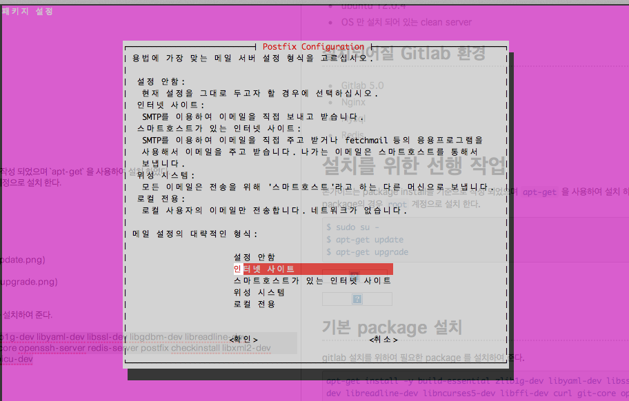
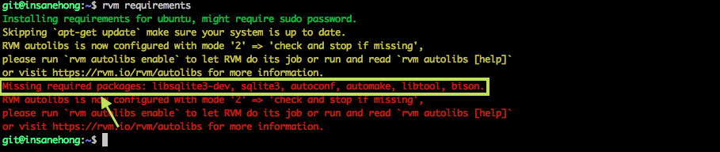
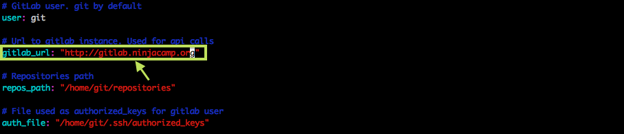
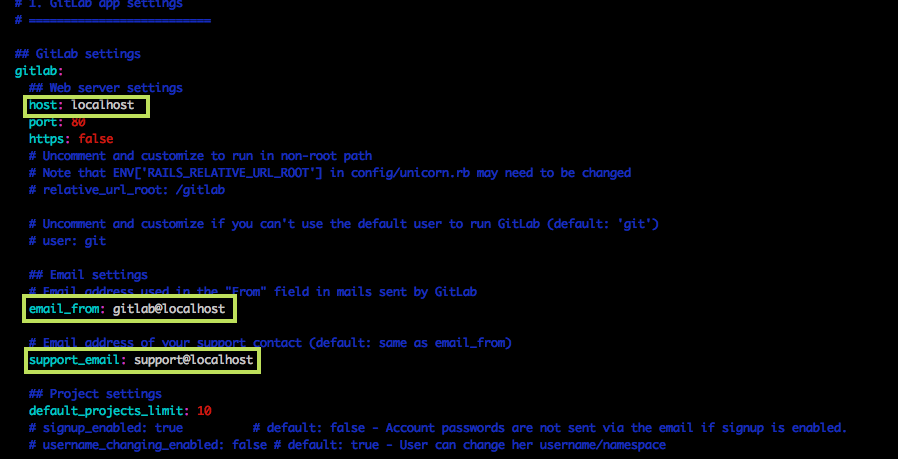
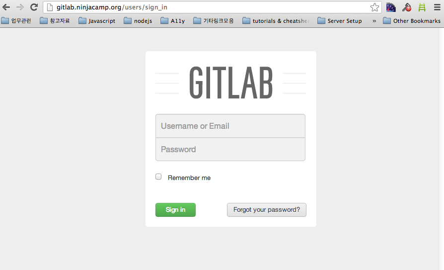

About Author

Insanehong
blog: http://insanehong.kr
twitter: @insanehong
github: insanehong.github.com
- NAVER Corporation, Front-End Engineer(2013~)
- Like Javascript, Dart, HTML5, CSS3,Responsive Web, Haroopress, Frends, Lean Startup, Open Source
- Hackrslab co-founder
- About me http://about.me/insanehong
About this Article
Date Released:
Sunday, April 21 2013 11:15 AM김대리 Gitlab 5.1 설치하다
2013년 3월 어느날 새벽 4시를 향해가고 있었고 몇시간의 사투 끝에 @andrwj와 페어 작업을 통해 Gitlab 5.0 설치에 성공 하였다.
하지만 그당시 서버 설정 및 기타 설치에 관련한 꼼수들이 존재 했었고 권한에 있어서는 굉장히 난해한 상황이였던 이유로 처음부터 다시 깔끔한 설정으로 설치해 보고 싶어 졌다.
그래서 지금부터 Gitlab 5.1를 재설치 하는 과정을 모두 이글에 담아보려고 한다.
Overview
이 글은 Gitlab 5.1 stable 설치 가이드를 기반으로 Gitlab 5.1을 설치하는 과정을 담고 있다. 하지만 개인의 선호도와 스타일, 권한관리 관점등을 이유로 공식가이드와 다소 다른 부분이 많이 존재한다.
이 글은 설치 가이드가 아니다. 그런이유로 이 글에서 나오는 세팅이 마음에 맞지 않거나 불가능한 설정도 담겨 있다. 그러니 절대 이 글을 통해서 완벽한 설치에 도움을 받을것이라 기대하는 것은 무리일 것이다.
서버 환경
- ubuntu 12.0.4
- OS 만 설치 되어 있는 Clean Server
- 단, 호스팅 업체에서 OS 설치시 약간의 Package를 설치해 주었다.
설치 Gitlab Package & Dependencies
- GitLab : v5.1 stable
- Ruby : v1.9.3 with rvm
- Python : v2.7
- System Users : git
- GitLab shell : v1.2.0
- Mysql : v5.5
- Nginx : v1.1.19
1. Packages & Dependencies Install
일단 가이드를 따라 Dependency 되어있는 몇가지 Package 들을 설치해야 했다. 페키지 설치는 너무나도 당연한 얘기지만 apt-get 을 사용할 것이다.
현재는 root 계정으로 로그인 되어있는 상태이다.
1.1 Packages Install
모든 작업이 그렇게지만 페키지들을 설치 하기 앞서 페키지 메니저를 통한 업데이트와 메니저 업그레이드를 먼저 실시 해주었다. 물론 공식 문서에도 나와있다.
// 패키지 설치에 사용할 apt-get update 및 upgrade
$ apt-get update
$ apt-get upgrade
작업이 완료되고 공식 설치 가이드를 따라 필요한 페키지들의 설치를 시작하였다. 나중에 공식문서가 얼마나 부실한지 깨닿게 되었지만 지금 순간에는 중요한게 아니다.
$ apt-get install -y build-essential zlib1g-dev libyaml-dev libssl-dev libgdbm-dev libreadline-dev libncurses5-dev libffi-dev curl git-core openssh-server redis-server postfix checkinstall libxml2-dev libxslt-dev libcurl4-openssl-dev libicu-dev
설치중 난데없이 postfix 호스트관련 설정을 하라는 녀석이 튀어 나왔다. postfix는 당장 사용할 생각도 없었고 필요할 때가 되면 smtp.gmail.com 을 사용할 계획이라 일단 설정안함을 선택해서 무시 했다.

1.2 Python 설치(2.5 >= version)
공식 설치 가이드에서 python v2.5 이상을 설치하여야 하지만 아직 v3.0 이상은 지원하지 않는다고 나와 있기에 v2.7 버전을 설치 하기로 했다.
Make sure you have the right version of Python installed. Make sure that Python is 2.5+ (3.x is not supported at the moment)
// python 설치
$ apt-get install python
// 설치 버전 확인
$ python --version
Python 2.7.3
설치 하려고 했던 버전이 잘 설치 되었음을 확인했다. 하지만 이부분은 설치 가이드에도 나와있듯이 정확한 버전을 설치 하는 것이 중요하니 공식문서상에 나와있는 이슈 해결부분을 마저 기록으로 남겨논다.
// apt-get install 시 python 3 가 설치 되는 경우 ver2.7으로 재설치 한다.
$ apt-get install python2.7
// 설치버전을 반드시 다시 확인한다.
$ python2 --version
// python2 install 후 버전 확인시 `command not found` error 가 발생할 경우 심볼릭 링크를 걸어 준다.
$ ln -s /usr/bin/python /usr/bin/python2
2. Mysql Install
PostgreSQL 와 Mysql 중 단 1초의 고민도 없이 Mysql을 선택 했다. PostgreSQL를 사용하지 않은 이유는 너무나도 간단 했다.
"PostgreSQL를 사용해본적이 단 한번도 없었다."
// Mysql 설치
$ apt-get install -y mysql-server mysql-client libmysqlclient-dev
// user추가 및 database 생성을 위해 root 계정으로 로그인 한다.
$ mysql -u root -p
// database 생성
mysql> CREATE DATABASE IF NOT EXISTS `gitlabhq_production` DEFAULT CHARACTER SET `utf8` COLLATE `utf8_unicode_ci`;
// user 생성 및 권한 추가
mysql> GRANT ALL PRIVILEGES ON gitlabhq_production.* to 'gitlab'@'localhost' IDENTIFIED BY '사용할 비밀번호';
mysql> FLUSH PRIVILEGES;
mysql> quit;
설치와 동시에 database와 user 추가까지 완료했으며 접속 테스트까지 수행해 본결과 성공적으로 마무리 되었다.
3. Gitlab User 추가
설치 가이드에서는 계정추가 이전에 Ruby를 설치하라고 하지만 계정을 만드는 것을 먼저 진행했다. 계정추가를 먼저 진행한 이유는 다음과 같다.
- rvm 을 통한 ruby 설치
- git 계정 하위로 rvm 설치
- 독립적인 ruby 버전 관리를 통하여 Global 설치된 Ruby의 버전 변경에 영향을 받지 않기 위함.
이부분에서는 @andrwj 의 조언이 큰 도움이 되었다. 곧 조공을 받쳐야 할듯 싶다.
어찌되었건 git 계정 추가 작업을 설치가이드에 맞추어 진행 하였다.
// git 계정은 로그인 비밀번호 없이 생성한다.
$ adduser --disabled-login --gecos 'GitLab' git
// git 계정으로 전환
$ su - git
// 이후 작업을 위해 git 디렉토리로 변경
$ cd /home/git
git 계정을 추가하고 곧바로 Ruby 설치 단계로 진행 하였다.
4. Ruby Install
위에서 밝혔듯이 지금부터 나오는 내용은 공식문서와는 전혀 다르게 진행되었다. 개인적으로 공식문서에 나온 바이너리 설치가 못마땅(?)했기에 RVM(Ruby Version Manager)을 사용해서 Ruby 를 설치 하기로 했고 설치 경로와 소유자는 당연히 git이 되어야 했다.
4.1 RVM 설치
// rvm 을 설치
$ bash -s stable < <(curl -s https://raw.github.com/wayneeseguin/rvm/master/binscripts/rvm-installer)
// rvm 자동로드 .bash_profile 에 추가
$ echo '[[ -s "$HOME/.rvm/scripts/rvm" ]] && . "$HOME/.rvm/scripts/rvm" # Load RVM function' >> ~/.bash_profile
// vi(vim)을 이용하여 직접 추가 하는 경우
$ vi .bash_profile
// .bash_profile 에 추가될 내용
###### Ruby Version Manager
[[ -s "$HOME/.rvm/scripts/rvm" ]] && source "$HOME/.rvm/scripts/rvm" # Load RVM into a shell session *as a function*
// 재접속을 피하기 위해 바로 적용.
$ source .bash_profile
$ rvm -v
rvm 1.19.6 (stable) by Wayne E. Seguin <wayneeseguin@gmail.com>, Michal Papis <mpapis@gmail.com> [https://rvm.io/]
RVM 이 제대로 설치 된것을 확인 했으니 Ruby 설치를 바로 진행 했다.
4.2 Ruby Install
이제 RVM 을 사용해서 ruby를 설치하려고 했는데 문제가 발생 했다. ruby 를 설치하기 위해 필요한 몇가지 페키지들이 설치 되어 있지 않다고 오류가 나왔다. 사실 RVM 설치를 할때 나왔던 메세지를 잘 읽어봤으면 생기지 않을 문제였지만 귀찮이즘과 시간단축을 위해 무시했던게 화근이기도 했다.
rvm requirements command 수행후 Missing required packages: 부분에서 알려주는 페키지들을 설치(global install)해 주어야 했다.

패키지 설치를 위해서 잠시 root 계정으로 변경 하였다.
// 누락된 페키지들을 설치한다.
$ apt-get install libsqlite3-dev sqlite3 autoconf automake libtool bison
// 설치가 완료되면 git 계정으로 전환한다.
$ su - git
$ cd /home/git
// Dependency 확인
$ rvm requirements
Installing requirements for ubuntu, might require sudo password.
Skipping `apt-get update` make sure your system is up to date.
RVM autolibs is now configured with mode '2' => 'check and stop if missing',
please run `rvm autolibs enable` to let RVM do its job or run and read `rvm autolibs [help]`
or visit https://rvm.io/rvm/autolibs for more information.
패키지 설치가 완료 되어 더이상 Missing required packages: 부분이 출력되지 않았다. 드디어 Ruby 를 설치할 수 있는 환경이 만들어졌다.
공식 문서상에 나와 있고 설치관련 각종 이슈등에서도 v1.9.3 버전을 설치하라고 나와 있어 그대로 따르기로 했다.
// rvm 을 사용하여 ruby v1.9.3 을 설치한다.
$ rvm install 1.9.3
// 설치후 시스템에서 사용할 ruby 버전으로 등록해 준다.
$ rvm --default ruby-1.9.3
// 지정한 버전이 설정 되어있는지 확인한다.
$ ruby -v
ruby 1.9.3p392 (2013-02-22 revision 39386) [x86_64-linux]
// bundler 설치.
$ gem install bundler
이렇게 해서 ruby 설치는 완료 되었다.
5. Gitlab-Shell Install
이어서 Gitlab 5.x 에서 새로 적용된 Gitlab-Shell을 설치했다. 이녀석으로 인하여 설치가 간편해졌다고 하지만 지금까지 작업만으로도 숨가뿌게 달리고 지루하 일이였던 것 만큼 간편해졌다는게 전혀 와닿지 않는다. 어째든 설치는 계속 진행 되었다.
사실 이후에 v1.3.0 으로 재설치 하였다. 왜 그렇게 했는지는 기록해 두었다. 이글을 따라서 설치하는 사람이 있다면 애당초 v1.3.0 branch를 사용할 것을 추천한다.
// gitlab-shell 을 Clone 받는다.
$ git clone https://github.com/gitlabhq/gitlab-shell.git
$ cd gitlab-shell
// v1.2.0 branch 로 변경한다.
$ git checkout -b v1.2.0
// 환경세팅파일을 복사한다.
$ cp config.yml.example config.yml
// gitlab에 사용될 URL 정보를 수정해 한다.
$ vi config.yml
config.yml 파일을 열어보면 gitlab_url: "http://localhost/" 로 되어 있는 부분이 있는데 이놈을 `gitlab.ninjacamp.org'로 수정을 해주었다.

수정이 완료 후 설치 스크립트를 실행해 주었다.
// Gitlab-shell 을 설치한다.
$ ./bin/install
설치가 완료되면 /home/git/.ssh/ 디렉토리에 authorized_keys 라는 파일이 생성되는데 gitlab이 repository로 접근하는 데 사용되는 인증키이다. 4.0 버전에서는 별도로 ssh key 생성을 해주어야 했는데 자동으로 생성해주니 편리하긴 했다.
6. GitLab Install
지금까지 열심히 달려왔지만 이제서야 Gitlab 을 설치하게 되었다. 만약 이 글을 따라하고 있는 사람이 있다면 앞으로 남은길이 산더미 같으니 포기하려면 지금 내려 놓는 것이 정신 건강에 좋을 것이다.
6.1 Clone the Gitlab 5.1
Gitlab-shell 설치를 위해 디렉토리의 변경이 있었기에 작업디렉토리를 변경해주는 것을 잊지 말고 수행해줘야 했다. 사실 신경안쓰고 넘어갈뻔 하기도 했다.
// 작업디렉토리 변경
$ cd /home/git
// clone the gitlab source
$ git clone https://github.com/gitlabhq/gitlabhq.git gitlab
// clone 받은 gitlab 디렉토리로 이동한다.
$ cd gitlab
$ git checkout -b 5-1-stable
gitlab 공식 가이드에 따르면 master branch 를 사용해도 되지만 stable branch 사용을 권장하고 있었다. 정신건강을 위해 가이드를 따르는 것이 좋을거 같았다.
Note: You can change 5-1-stable to master if you want the bleeding edge version, but do so with caution!
6.2 Gitlab Configure
지금부터의 작업은 지겨운 설정과의 싸움이며 gem과의 전쟁의 시초가 되었다. 아마 앞으로 나올 설정중 이부분이 가장 간단하게 완료된 부분이 아니였나 생각한다. 실제로도 할게 거이 없기도 하다.
// gitlab 설정 파일을 복사한다.
$ cp config/gitlab.yml.example config/gitlab.yml
// 복사된 설정 파일을 열어 `localhost` 부분을 `gitlab-shell` 설정에 추가한 URL로 변경해 준다.
$ vi config/gitlab.yml
gitlab.yml 파일을 열어보면 production 부분에 3개의 localhost가 존재한다. 각각 host, email_from, support_email 인데 이부분을 수정해 주었다.

수정이 완료되면 디렉토리에 대한 약간의 작업을 진행 했다. 공식문서에 나온 가이드를 옮겨왔지만 개인적으로 모든 작업을 git 계정으로 해놨기에 불필요한 부분도 있었다.
// /log, /tmp 디렉토리의 소유자와 권한을 수정해 준다.
// git 계정으로 작업하였기에 소유자는 굳이 손대지 않아도 되었다.
$ chown -R git tmp/
$ chmod -R u+rwX tmp/
$ chown -R git log/
$ chmod -R u+rwX log/
// gitlab-satellites 디렉토리를 생성해 준다.
$ mkdir /home/git/gitlab-satellites
// /home/git/gitlab/tmp 디렉토리에 `pids`를 생성해 준다.
$ mkdir tmp/pids/
$ chmod -R u+rwX tmp/pids
6.3 puma.rb 설정
@andrwj의 말에 따르면 이녀석은 unicorn 의 대체자로 gitlab 시작 스크립트가 이전버전(5.0 >=) 에서는 unicorn 을 호출하고 v5.1 부터는 puma를 호출하게 변경 되었다고 한다.
// puma 설정파일을 복사 한다.
$ cp config/puma.rb.example config/puma.rb
// tcp 사용을 위한 수정
$ vi config/puma.rb
// replace config
// from
# bind "tcp://0.0.0.0:9292"
bind "unix://#{application_path}/tmp/sockets/gitlab.socket
//to
bind "tcp://gitlab.ninjacamp.org:9292
# bind "unix://#{application_path}/tmp/sockets/gitlab.socket
6.4 database 설정
위에서 메모해둔 mysql 정보를 써먹을때가 왔다. 사실 절대 잊어버릴수 없는 비밀번호임을 다시 생각해본다.
// mysql 설정 파일을 복사 한다.
$ cp config/database.yml.mysql config/database.yml
// production 설정을 생성한 database 맞게 수정한다.
$ vi config/database.yml
database.yml 파일을 열어보면 production, development, test 의 3가지 섹션이 존재 한다. 하지만 이번 설치에서는 production 부분만을 수정했다.
username 과 password 만 위에서 생성한 정보로 수정 했다.

6.5 Install Gems
이제부터가 진정한 싸움의 시작을 알리는 서막이였다. 처음부터 오류가 터져 나와 주었다. charlock_holmes 설치가 되지 않았던 것이다.
$ gem install charlock_holmes --version '0.6.9'
Building native extensions. This could take a while...
ERROR: Error installing charlock_holmes:
ERROR: Failed to build gem native extension.
/home/git/.rvm/rubies/ruby-1.9.3-p392/bin/ruby extconf.rb
checking for main() in -licui18n... *** extconf.rb failed ***
Could not create Makefile due to some reason, probably lack of
necessary libraries and/or headers. Check the mkmf.log file for more
details. You may need configuration options.
Provided configuration options:
--with-opt-dir
--without-opt-dir
--with-opt-include
--without-opt-include=${opt-dir}/include
--with-opt-lib
--without-opt-lib=${opt-dir}/lib
--with-make-prog
--without-make-prog
--srcdir=.
--curdir
--ruby=/home/git/.rvm/rubies/ruby-1.9.3-p392/bin/ruby
--with-icu-dir
--without-icu-dir
--with-icu-include
--without-icu-include=${icu-dir}/include
--with-icu-lib
--without-icu-lib=${icu-dir}/lib
--with-icui18nlib
--without-icui18nlib
/home/git/.rvm/rubies/ruby-1.9.3-p392/lib/ruby/1.9.1/mkmf.rb:381:in `try_do': The compiler failed to generate an executable file. (RuntimeError)
You have to install development tools first.
from /home/git/.rvm/rubies/ruby-1.9.3-p392/lib/ruby/1.9.1/mkmf.rb:461:in `try_link0'
from /home/git/.rvm/rubies/ruby-1.9.3-p392/lib/ruby/1.9.1/mkmf.rb:476:in `try_link'
from /home/git/.rvm/rubies/ruby-1.9.3-p392/lib/ruby/1.9.1/mkmf.rb:619:in `try_func'
from /home/git/.rvm/rubies/ruby-1.9.3-p392/lib/ruby/1.9.1/mkmf.rb:845:in `block in have_library'
from /home/git/.rvm/rubies/ruby-1.9.3-p392/lib/ruby/1.9.1/mkmf.rb:790:in `block in checking_for'
from /home/git/.rvm/rubies/ruby-1.9.3-p392/lib/ruby/1.9.1/mkmf.rb:284:in `block (2 levels) in postpone'
from /home/git/.rvm/rubies/ruby-1.9.3-p392/lib/ruby/1.9.1/mkmf.rb:254:in `open'
from /home/git/.rvm/rubies/ruby-1.9.3-p392/lib/ruby/1.9.1/mkmf.rb:284:in `block in postpone'
from /home/git/.rvm/rubies/ruby-1.9.3-p392/lib/ruby/1.9.1/mkmf.rb:254:in `open'
from /home/git/.rvm/rubies/ruby-1.9.3-p392/lib/ruby/1.9.1/mkmf.rb:280:in `postpone'
from /home/git/.rvm/rubies/ruby-1.9.3-p392/lib/ruby/1.9.1/mkmf.rb:789:in `checking_for'
from /home/git/.rvm/rubies/ruby-1.9.3-p392/lib/ruby/1.9.1/mkmf.rb:840:in `have_library'
from extconf.rb:27:in `<main>'
Gem files will remain installed in /home/git/.rvm/gems/ruby-1.9.3-p392/gems/charlock_holmes-0.6.9 for inspection.
Results logged to /home/git/.rvm/gems/ruby-1.9.3-p392/gems/charlock_holmes-0.6.9/ext/charlock_holmes/gem_make.out
이를 해결하기 위해 Gitlab 메일링 그룹과 Stackoverflow 에 문의했으나 아무런 대답이 없었고 @andrwj 가 트러블슈팅을 도와주었다.
장작 24시간동안 메달린 오류의 원인은 너무나도 황당,간단,기본적인 녀석이였기에 엄청난 갈굼을 견더야 했지만 조공을 바치는 선에서 해결했다.
rails의 부제. 그렇다 지금까지 작업 히스토리를 아무리 뒤져보아도 rails를 설치한 적이 없었다. 어째되었건 원인을 찾았으니 설치를 계속 진행 했다.(사실 charlock_holmes와 bundle install은 @andrwj가 진행해 주었다.)
이부분은 오류 해결을 위해 @andrwj 가 수행한 command set을 그대로 남긴다.
// rvm 을 최신 버전으로 업데이트
$ rvm get head
// 종속 페키지 확인
$ rvm requirements run
// 기존 ruby 삭제
$ rvm remove 1.9.3
// ruby 재설치 및 default 지정
$ rvm use 1.9.3 --install --default
// rails 설치
$ gem install rails
// charlock_holmes 설치
$ gem install charlock_holmes --version '0.6.9'
// bundle install
$ bundle install --deployment --without development test postgres
$ bundle exec rake gitlab:setup RAILS_ENV=production
This will create the necessary database tables and seed the database.
You will lose any previous data stored in the database.
Do you want to continue (yes/no)? yes
.
. (중략)
.
Administrator account created:
login.........admin@local.host
password......5iveL!fe
마지막 명령을 수행하고 나오는 ouput 중 중요한 정보들이 있다. 초기 관리자 계정과 비밀번호. 나중에 다시 찾아보는걸 방지하기 위해 미리 기록해 두었다.
6.6 Check Application Status
gitlab 을 스타트 하기 위해 필요한 녀석들이 제대로 인스톨 되었는지 확인하는 단계다. 바로 이부분에서 Gitlab-Shell v1.2.0 설치 부분에서 말했던 이슈와 함께 Gitlab-Shell 을 재설치 하게 되었다.
$ su - git
$ cd /home/git/gitlab
// System, Gitlab,Gitlab-Shell 등의 설치 정보를 확인한다.
$ bundle exec rake gitlab:env:info RAILS_ENV=production
// gitlab configure 정보를 확인한다.
$ bundle exec rake gitlab:check RAILS_ENV=production
configure 확인중에 재미있는 녀석을 발견했다. 가이드에서는 Gitlab-Shell v1.2.0 을 사용하라고 적혀있지만 결과는 Gitlab-Shell v1.3.0 을 설치 하라고 했다. 그래서 v1.3.0 으로 재설치후 다시 확인해 보았다.
$ bundle exec rake gitlab:env:info RAILS_ENV=production
System information
.
. (중략)
.
GitLab Shell
Version: 1.3.0
Repositories: /home/git/repositories/
Hooks: /home/git/gitlab-shell/hooks/
Git: /usr/bin/git
$ bundle exec rake gitlab:check RAILS_ENV=production
Checking Environment ...
.
. (중략)
.
Checking Gitlab Shell ...
GitLab Shell version? ... OK (1.3.0)
Repo base directory exists? ... yes
Repo base directory is a symlink? ... no
Repo base owned by git:git? ... yes
Repo base access is drwxrws---? ... yes
post-receive hook up-to-date? ... yes
post-receive hooks in repos are links: ... can't check, you have no projects
Checking Gitlab Shell ... Finished
.
.(중략)
.
Checking GitLab ... Finished
Gitlab 과 Gitlab-Shell 모두 최신 버전으로 설치가 완료 되었음이 확인 되었다.
7. Install init Script
이부부은 gitlab을 관리하는 스크립트를 설치하는 부분임으로 다시 root계정으로 변경 하였다. 특별한 이슈 없이 설치 가이드를 따라 진행했다.
$ curl --output /etc/init.d/gitlab https://raw.github.com/gitlabhq/gitlab-recipes/5-1-stable/init.d/gitlab
$ chmod +x /etc/init.d/gitlab
$ update-rc.d gitlab defaults 21
$ service gitlab start
Puma 2.0.0.b7 starting...
* Min threads: 0, max threads: 16
* Environment: production
* Listening on tcp://gitlab.ninjacamp.org:9292
Gitlab service started
8. NginX Install
9292 포트로 열린 Gitlab을 80 포트로 서비스하기 위해 nginx 를 proxy로 사용하기로 했다.
// nginx 설치
$ apt-get install nginx
// config 다운로드
$ curl --output /etc/nginx/sites-available/gitlab https://raw.github.com/gitlabhq/gitlabhq/master/lib/support/nginx/gitlab
// 심볼링크 설정
$ ln -s /etc/nginx/sites-available/gitlab /etc/nginx/sites-enabled/gitlab
// 설정 파일 수정
$ vi /etc/nginx/sites-available/gitlab
nginx를 통해 80 포트로 Request 를 받고 이를 9292 포트 로 던져주는 설정만 하면 되기에 아래와 같이 수정해 주었다.
# GITLAB
# Maintainer: @randx
# App Version: 5.0
server {
listen 80; # e.g., listen 192.168.1.1:80;
server_name gitlab.ninjacamp.org; # e.g., server_name source.example.com;
root /home/git/gitlab/public;
# individual nginx logs for this gitlab vhost
access_log /var/log/nginx/gitlab_access.log;
error_log /var/log/nginx/gitlab_error.log;
location / {
# serve static files from defined root folder;.
# @gitlab is a named location for the upstream fallback, see below
try_files $uri $uri/index.html $uri.html @gitlab;
}
# if a file, which is not found in the root folder is requested,
# then the proxy pass the request to the upsteam (gitlab unicorn)
location @gitlab {
proxy_read_timeout 300; # https://github.com/gitlabhq/gitlabhq/issues/694
proxy_connect_timeout 300; # https://github.com/gitlabhq/gitlabhq/issues/694
proxy_redirect off;
proxy_set_header X-Forwarded-Proto $scheme;
proxy_set_header Host $http_host;
proxy_set_header X-Real-IP $remote_addr;
proxy_pass http://gitlab.ninjacamp.org:9292;
}
}
nginx 를 실행 시켜주고 서비스 되는지 확인.
$ service nginx start

9. .bashrc PATH 설정
사실 브라우저를 통해 실행 화면을 보았을때 모든게 끝이 났다고 생각했다. 하지만 크나큰 오산.
$ git push -u origin master
/usr/bin/env: ruby: 그런 파일이나 디렉터리가 없습니다
fatal: Could not read from remote repository.
Please make sure you have the correct access rights
push command 를 수행하면 ruby path 를 /home/git/.rvm/bin 밑으로 잡지 못하고 있었다.
이를 위해 .bashrc 파일 최상단에 PATH 설정을 해주고 별내용 없던 .profile 을 삭제 해주었다.
$ su - git
$ vi .bashrc
// 최상단에 export PATH=/home/git/.rvm/bin:$PATH 추가
$ rm -f .profile
이부분은 이미 백전노장 @andrwj 가 알려주었지만 깜박하고 있었기에 또한번의 갈굼을 피할길이 없었다. 이로인해 조공은 2배로 늘었다.
어째되었건 다시 push 테스트를 진행 하였고 성공적으로 모든 테스트가 완료 되었다.
insanehong:~/WorkSpace/sample(master)> git push -u origin master
Counting objects: 3, done.
Writing objects: 100% (3/3), 215 bytes, done.
Total 3 (delta 0), reused 0 (delta 0)
To git@gitlab.ninjacamp.org:Insanehong/sample.git
* [new branch] master -> master
Branch master set up to track remote branch master from origin.
마무리
이로서 이번 재설치의 모든 작업을 기록으로 남기는 것이 모두 완료되었다. 처음에도 밝혔지만 별거아닌 작업이고 설치 가이드를 따라 진행했으며 백전노장의 도움을 받으면서 이글은 누군가가 이글을 따라 설치하는데 도움이 됬으면 한다거나 하는 생각으로 만든 글이 아니다. 단순히 개인의 작업을 리뷰할 생각으로 기록으로 남기고 싶었을 뿐이다.
이 작업이 완료될수 있게(평소에도 많은 도움을 받지만) 도와준 백전노장 @andrwj 에게 다시한번 감사의 말을 전하며 마친다.